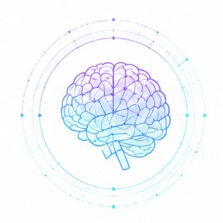

四個主軸，貫穿量測、監測、轉譯與創新——我們關心的不只是模型表現，而是模型如何被臨床人員理解、採納並改善照護決策。

以 Snaith-Hamilton Pleasure Scale（SHAPS）、生態瞬時評估（EMA）與移動平均理論為核心，發展個人化動態監測架構，辨識憂鬱與失樂感風險變化。相關研究包含 SHAPS 切分值與預測因子（臨床與校園場域比較）、青少年憂鬱症狀發展軌跡之潛在類別成長分析，以及跨裝置失樂感趨勢視覺化平台之開發與驗證。
分析擬真教育中的學習反應異質性，以 responder analysis 與混合方法探討「誰最能從訓練中受益」，建立 learner-tailored simulation 與成效評估模式。並發展 AI 虛擬人增強遊戲式教學、生成式 AI 結合檢索增強生成（RAG）之臨床推理學習系統等 AI 輔助護理訓練應用。
與經濟部產業發展署／資策會合作，建立照護產業科技化評估指標與推動指引，支援長期照顧與照護服務的數位轉型，讓科技導入回應照護現場的真實需求。
把研究從論文推向場域驗證、智慧財產、國際合作、教育模組與臨床工作流程。我們的轉譯模型不是把科技放進醫療，而是讓科技回應照護問題。
從量表、EMA、學習歷程與臨床資料建立可靠訊號。
模型結果要能被護理師、教師、研究者與管理者理解。
重視場域資料、前後測、長期追蹤、質量混合方法與真實世界成效。
輸出論文、系統、課程模組、智財、合作案與實務指引。